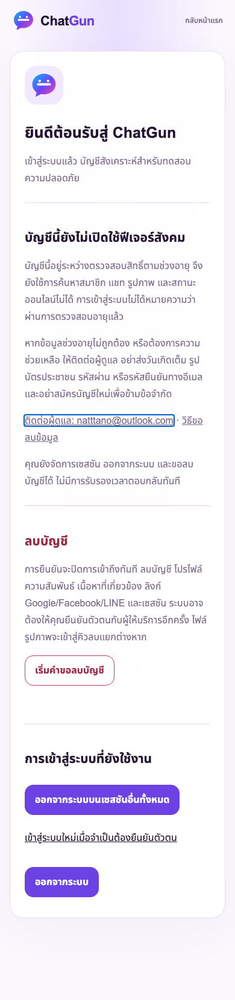
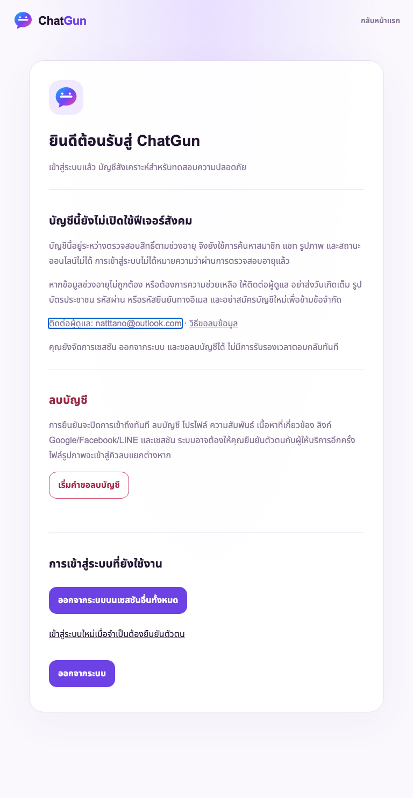
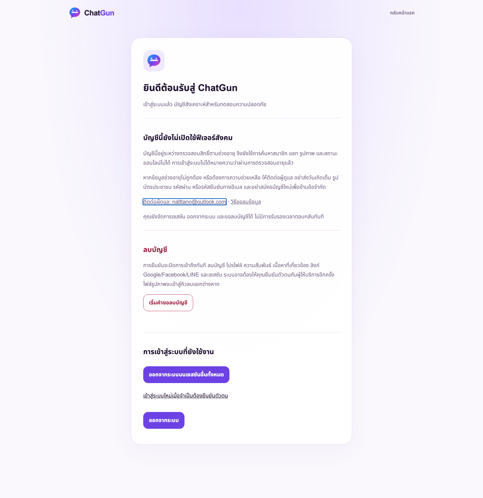

ChatGun — ผล E2E มาตรการพักสิทธิ์ตามอายุ
24 ตุลาคม 2026 · Asia/Bangkok · สำหรับตรวจงาน ไม่ใช่นโยบายสำหรับเผยแพร่
ขอบเขตที่ทดสอบจริง
Playwright เรียก Cloudflare Pages Functions และ D1 จริงบน Preview แยก ใช้บัญชีและเซสชันสังเคราะห์เฉพาะการทดสอบ ไม่สร้างตัวตน OAuth ไม่ใช้เด็กจริง และไม่ใช่หลักฐานว่าล็อกอิน LINE/Google/Facebook หรือผ่าน Turnstile จริง
Application SHA: b84f1475cba938169bdb3bfdc95f45e9f5329f57 · schema20 · Production ยังคง a73ff21c615dabb6a0c19c0a22685c2370958ca1
ผล Cloud E2E รอบเต็มสุดท้าย: 11 ผ่าน · 0 ล้มเหลว · 0 ข้าม
- ต่ำกว่า13,13–17,18–19 ครบ390/768/1440px รวม9เส้นทาง
- API ปฏิเสธ Social/แชท/อัลบั้ม/ออนไลน์ พร้อมระบุเหตุพักสิทธิ์จากเซิร์ฟเวอร์
- เปิดแอปโดยตรงกลับไปหน้าบัญชี แสดงข้อความภาษาไทย ไม่เปิดการเชื่อมบัญชีหรือเมนู Social
- รีโหลดแล้วยังรักษาเซสชัน ควบคุมด้วยแป้นพิมพ์ได้ และไม่ล้นแนวนอน
- CSRF ผิดและต้นทางผิดถูกปฏิเสธ เพิกถอนเซสชันอื่นแล้วใช้งานต่อไม่ได้
- ลบบัญชีสังเคราะห์ผ่านหน้าจอจริง แล้ว API ปฏิเสธเซสชันเดิมและการส่งคำขอลบซ้ำ
- เซสชันหมดอายุถูกปฏิเสธ การยืนยันตัวตนเก่าไม่อนุญาตลบบัญชี และ logout รอผลHTTPจริงก่อนตรวจการเพิกถอน
- Preview ไม่เปิด OAuth/สมัครสาธารณะ และผู้ไม่ล็อกอินเข้าข้อมูลสมาชิกไม่ได้
ความสมบูรณ์ข้อมูลและการเก็บหลักฐาน
รันสองชุดสังเคราะห์ใหม่ รวม20บัญชี ลบ18บัญชีด้วยขั้นตอนลบบัญชีที่ยืนยันตัวตนแล้ว เก็บบัญชีควบคุมพักสิทธิ์2บัญชีไว้ในฐานข้อมูลแยก โดยเพิกถอนทุกเซสชันทดสอบ ไม่สร้างโปรไฟล์ รูปภาพ สื่อ R2 ตัวตนผู้ให้บริการ หรือสิทธิ์ Admin ใหม่
สำรองก่อน/หลังในไดเรกทอรีส่วนตัว จำกัดสิทธิ์ไฟล์ แล้ว restore และเปรียบเทียบแฮชทุกแถวเดิมทั้ง54ตารางรวมประวัติmigration: ข้อมูลเดิมไม่เปลี่ยนและforeign-key violations0 ทั้งสองรอบ ไม่ลบหรือแก้ไขชุดข้อมูล Staging เดิม และไม่แตะ Production D1/R2
ผลรอบก่อนหน้า ไม่ปกปิดข้อผิดพลาด
รอบแรกหยุดเพราะตัวทดสอบคาดURLแบบ .html/age-review แต่ Pages ใช้ /account?access=restricted โดยหน้าบัญชีแสดงมาตรการถูกต้อง รอบถัดไป9เส้นทางผ่าน แต่ตัวตรวจlogoutเร็วเกินคำตอบHTTP จึงแก้ให้รอคำตอบก่อนตรวจ แล้วทดสอบเฉพาะจุดผ่าน จากนั้นรันใหม่ทั้งชุดด้วยบัญชีสังเคราะห์ใหม่และผ่าน11/11 ไม่ได้เปลี่ยนโค้ดแอปหรือปิดมาตรการความปลอดภัยเพื่อให้ผ่าน
ภาพหน้าจอจาก Cloudflare Preview จริง — บัญชีสังเคราะห์



ยังไม่พร้อมเปิดรับผู้เยาว์จริง: NO-GO
OAuth/Turnstile จริงและเส้นทางสมัคร13+ยัง BLOCKED ในสภาพแวดล้อมนี้เพราะจงใจปิดไว้ ขั้นตอนประเมินอายุ ความสามารถทางกฎหมาย/ผู้ปกครองเมื่อจำเป็น การสมัครสำหรับผู้เยาว์ การแก้ไขอายุ การถอนการอนุญาต และปฏิบัติการคุ้มครองเด็กยังต้องทำและรับรองก่อนเปิดจริง ผลทดสอบนี้ยืนยันการพักสิทธิ์และรักษาสิทธิ์จัดการบัญชี ไม่ใช่การอนุมัตินโยบายหรือความพร้อมของบุคลากร
Admin/MFA ยังพักไว้ ไม่ merge ไม่ deploy Production ไม่เปิดบริการจริงจากงานนี้